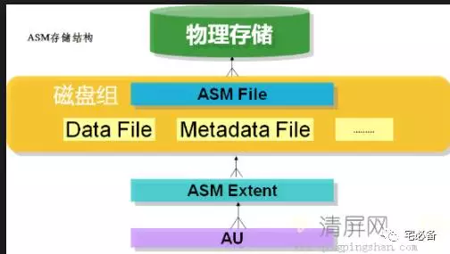
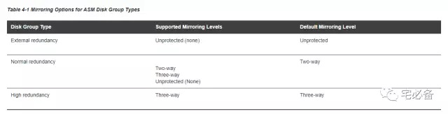
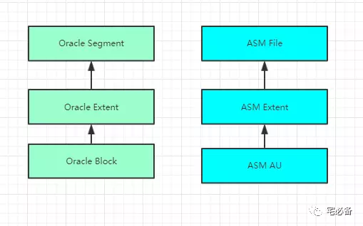

Oracle ASM Disk Groups
原创 2017-10-16 Oracle 宅必备
这个专题讲ASM相关的内容，版本为11g
内容主要来自官方文档，加上一些自己的理解及实践
ASM磁盘组(ASM Disk Groups)

-
ASM 磁盘组由多个磁盘组成，是ASM管理的基本对象
-
每个磁盘组包含了一些ASM实例用来管理所需的元数据
-
文件在磁盘组中分配，每个ASM 文件(ASM File)只会包含在一个磁盘组中
-
但是每个磁盘组包含多个ASM文件
镜像功能
Oracle ASM提供镜像功能来保障数据库完整性和安全性，做法为将数据的副本保存在不同的磁盘
当你建立disk group时候，可以指定下面几种冗余级别
-
Normal for 2-way mirroring
-
High for 3-way mirroring
-
External to not use ASM mirroring, such as when you configure hardware RAID for redundancy
ASM 磁盘组比普通RAID更加灵活，他可以针对不同文件指定不同冗余级别，例如在一个磁盘组中可以针对一个文件使用两路冗余，一个使用三路冗余

故障组(failure groups)
故障组是磁盘组的一个子集
当ASM 分配一个normal级别的文件的区(extent,分配的最小单位)时，会新建一个主副本(primary copy)和次副本(secondary copy),然后将他们分配到不同的故障组中，这样就确保镜像数据处于不同的故障组中，ASM可以接受故障组中所有的磁盘失效
你在建立磁盘组的时候指定故障组，当磁盘组建立完成后无法更改冗余级别，如果需要不同级别，请新建一个磁盘组并将文件移过去
Orale建议故障组的空间一样大
如果在建立磁盘组时忽略建立故障组，则默认将每个磁盘当作一个故障组，Normal级别至少需要2个故障组，High级别至少需要3个故障组，External不需要故障组
注意这里指的是至少，可以使用尽可能多的故障组
Normal级别允许不同故障组的一个ASM 磁盘失败，High级别允许不同故障组的两个磁盘失败
ASM磁盘(ASM Disks)
我们知道磁盘组由多个ASM磁盘组成， ASM磁盘允许如下形式的磁盘
-
磁盘阵列中的一个磁盘或者分区
-
整个磁盘或者其中的一个分区
-
逻辑卷(LV)
-
NFS
当我们增加一个ASM 磁盘到磁盘组时可以指定磁盘名称，也可以让ASM自动命名
该名称和操作系统设备名(如 /dev/sda)的不一样，在集群中一个ASM 磁盘在不同的节点名称可能不同，但是对于集群来说他们有共同的ASM 磁盘名
分配单元(Allocation Units)
AU是ASM磁盘的最小单位，区是由多个AU构成，区是磁盘组分配空间的最小单位，ASM File由多个区构成
这里可以类比下Oracle空间的分配

当我们建立磁盘组时可指定AU的大小，从1M到64M，必须为2的指数倍，大的AU大小对数据仓库类型数据库有帮助
好了，ASM 磁盘组就这么多了，下节讲ASM File ，包括他们在磁盘组中是如何分配的